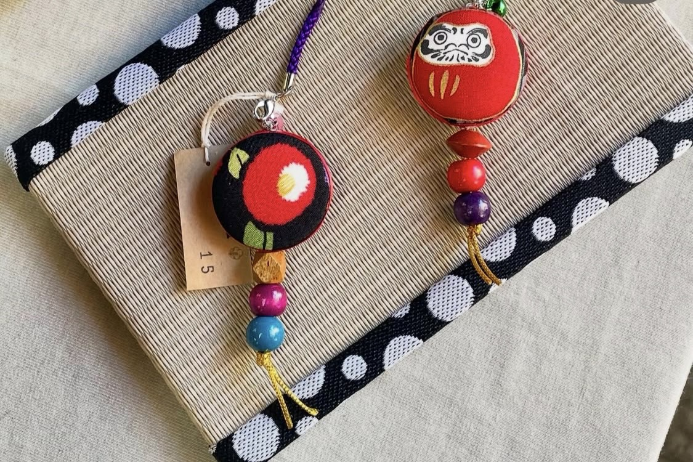
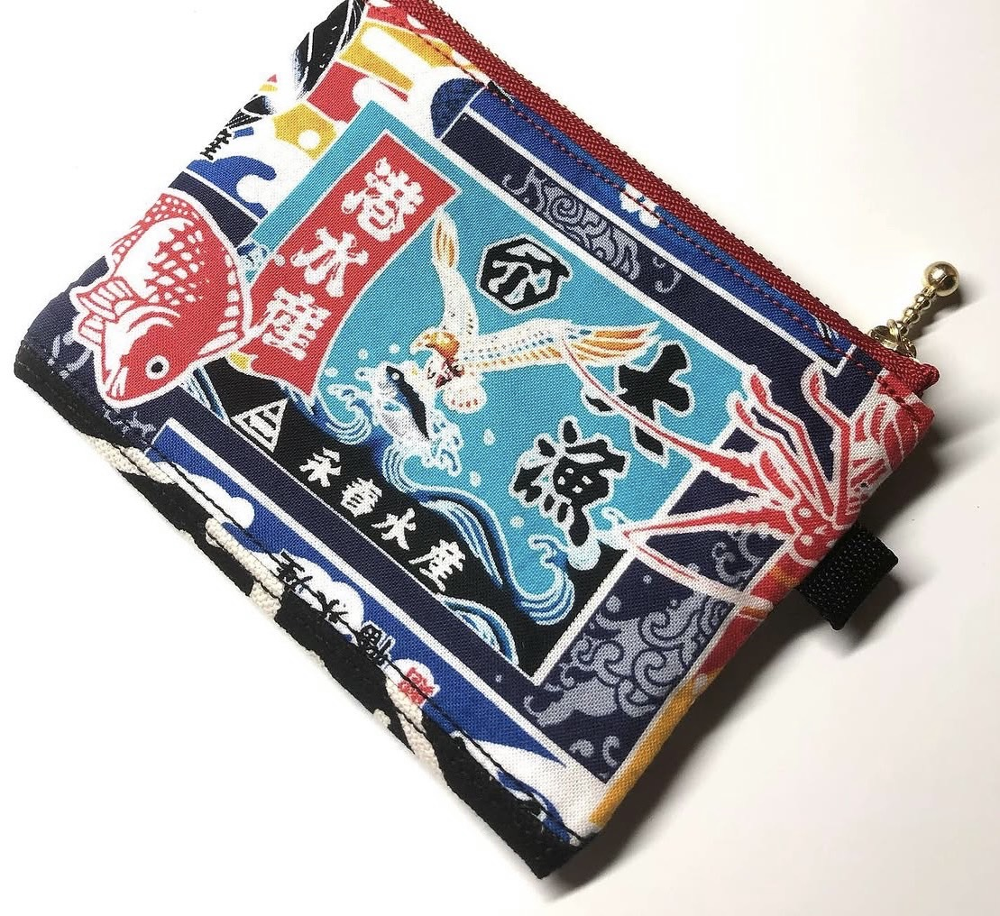

制作へのこだわり Miyajima Handmadeの作家たちが、作品づくりにおいて大切にしている「3つのこだわり」をご紹介します。 厳選された広島・宮島ゆかりの素材 長く愛用できる丁寧な手仕事 旅の思い出に寄り添うデザイン 宮島の歴史や自然をカタチに 私たちは、宮島の美しい景色や伝統文化からインスピレーションを受けてデザインを考えています。例えば、鳥居の鮮やかな朱色をイメージした糸や、瀬戸内海の穏やかな青を取り入れた天然石など、手にした瞬間に宮島の風景がよみがえるような色使いを大切にしています。 一つひとつに想いを込めて ハンドメイドだからこそ、大量生産にはない温かみと頑丈さにこだわっています。がま口財布の縫製や、キーホルダーの金具留めなど、日常の中で長く安心して使っていただけるよう、見えない部分まで職人の目で丁寧に仕上げています。   このページの先頭へ